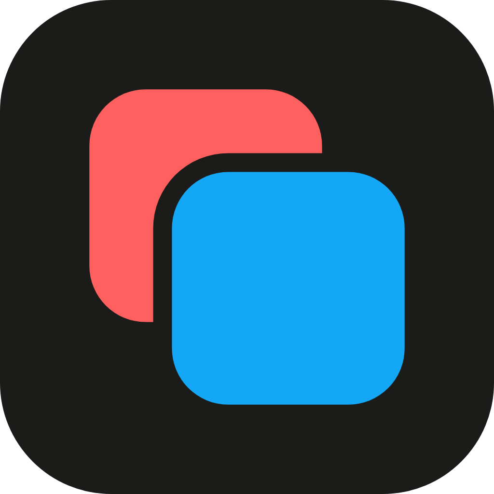
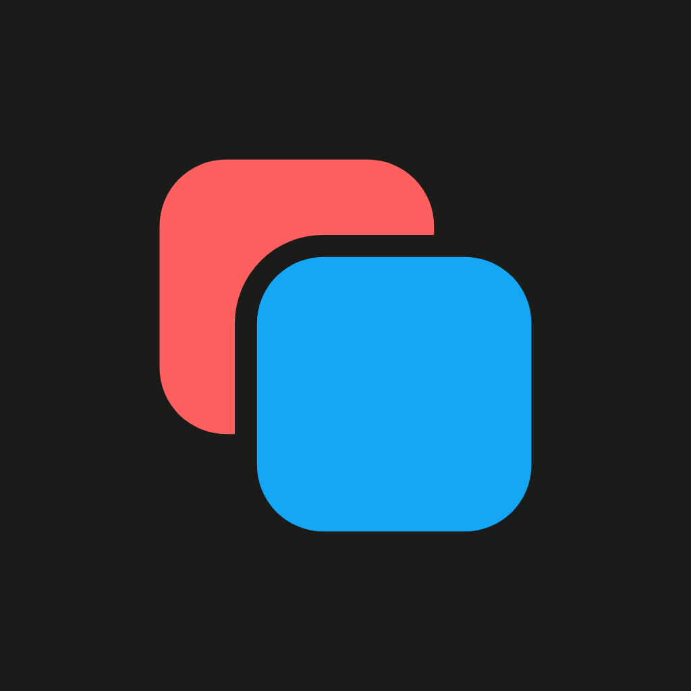

两片一样大的屏，45° 错开 22，中间留 5 的空气。前面那片蓝，是你正在看的那一页； 后面那片珊瑚，是它背后还开着的那些。前面那片把后面切出一个 17 宽的 L —— 那个 L 就是"还有很多台"。 整张图只有两片、一个角度、一条缝，没有第三条线。
Every screen on your LAN,
in one quiet place.
深底不换色。蓝是 #13A7F5，珊瑚是 #FD605E，两个颜色在 #151613 上都还亮着。


| 片 | 62 × 62，圆角 15（≈ 24%，和 App 图标同一个手感） |
| 错位 | 22 / 22，即 45° 斜向；两片的对角正好落在 8 与 92 —— 满 84 的画布 |
| 空气 | 5，沿两条边等宽；后面那片因此只露 17 宽的 L |
| 小尺寸切版 | 16–24px 用 favicon.svg：空气加宽到 8，隙在 16px 下还剩 1.3px，不会糊成一块 |
| 颜色 | 前 #13A7F5 ／ 后 #FD605E |